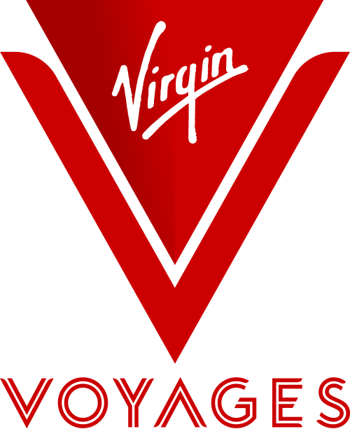
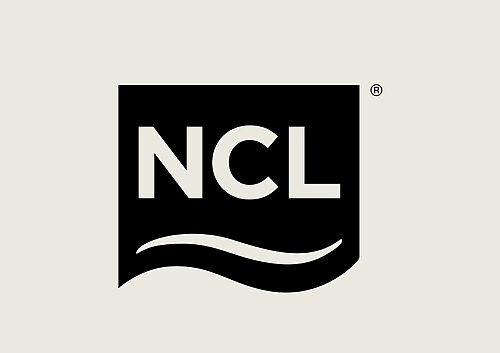
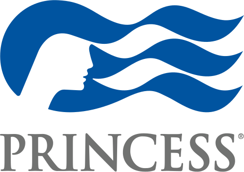
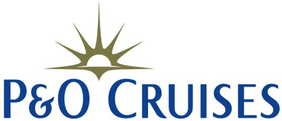
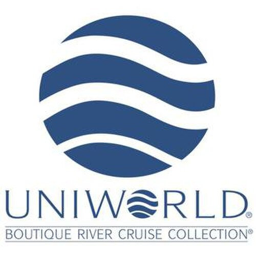

Snow capped mountains dropping straight into a turquoise lake, jet boats, bungy jumping and some of the best hiking anywhere in the world. New Zealand is a long way from the UK, but it rewards the journey more than almost anywhere else I book. Here is exactly how I put together a trip built around Queenstown, the hotels I can price up for you, and what it actually costs.
New Zealand is not a destination sold as a simple flight and hotel package by any of the big UK operators, so I build it as a proper tailor made trip, putting together flights, transfers and named hotels across the suppliers I work with rather than a single off the shelf product. Queenstown is where most of my clients spend the heart of their trip, a small lakeside town ringed by The Remarkables mountain range and known as the self proclaimed adventure capital of the world, home to bungy jumping, jet boating and some genuinely spectacular hiking and scenery.
I compare prices and routing across the suppliers I work with to find the best fit for your dates, whether that is Queenstown alone or a proper multi centre trip taking in Auckland, Rotorua or Aoraki Mount Cook as well.
New Zealand is genuinely a once in a lifetime trip for most of my clients given the flight time involved, so I always build in enough time on the ground to make the journey worth it. Three or four nights in any one place is rarely enough.
Queenstown alone is worth four to five nights, long enough for Milford Sound, a couple of the big adventure activities and time to just enjoy the town and the lake. Given how far New Zealand is to fly, most of my clients build a longer trip around it, two to three weeks in total, combining Queenstown with Auckland, Rotorua or the Aoraki Mount Cook area, or continuing on to explore more of the South Island independently with a hire car.
It suits honeymooners, hikers, Lord of the Rings fans, thrill seekers and families over the New Zealand summer in December and January when school holidays align. It is less suited to clients wanting a short break, those on a tight budget, since New Zealand is one of the pricier long haul destinations I book, and anyone who cannot commit to the long flight time.
There are no direct flights between the UK and New Zealand, so every route involves at least one stopover, usually in Dubai, Singapore, Hong Kong or Los Angeles. Total journey time typically runs from around 23 to 26 hours including the stopover, depending on your route and connection time. Most of my clients fly into Auckland, New Zealand's main international gateway, then take a domestic flight on to Queenstown, around two hours away, or start their trip in Auckland itself as part of a multi centre.
Queenstown also has its own international airport with a small number of direct seasonal flights from Australia, though UK arrivals will almost always connect via Auckland or Christchurch first.
I always build in a decent gap, at least two to three hours, between your international arrival into Auckland and any connecting domestic flight on to Queenstown. New Zealand's immigration and biosecurity checks on arrival can take a while, and you do not want to be rushing for a connection after that long in the air.
Queenstown sits in the South Island's Otago region, so its seasons run opposite to the UK's, summer over December to February, winter over June to August. These are long term monthly averages.
| Month | Avg high | Avg low | What to expect |
|---|---|---|---|
| January | 20°C | 8°C | Peak summer, long warm days, the busiest and most expensive month |
| February | 20°C | 8°C | Still warm and settled, slightly quieter than January |
| March | 17°C | 6°C | Early autumn, warm days with cooler evenings, harvest season in the vineyards |
| April | 13°C | 4°C | Autumn colour at its best, a favourite month of mine for Queenstown |
| May | 9°C | 1°C | Turning cold, the shoulder season before ski resorts open |
| June | 6°C | -2°C | Ski season begins, cold and often crisp and clear |
| July | 6°C | -2°C | The coldest month, excellent skiing conditions |
| August | 8°C | -1°C | Still deep winter, ski season continues |
| September | 11°C | 1°C | Ski season winds down, early spring arriving |
| October | 13°C | 3°C | Spring in full swing, the wettest month for rainfall |
| November | 16°C | 4°C | Warming up nicely, good hiking weather with fewer crowds than summer |
| December | 18°C | 6°C | Summer arriving, New Zealand's own school holidays begin mid month |
Long term monthly averages for Queenstown, via Weather2Travel's climate data.
Queenstown gets some rain in every month of the year, so I never promise clients a completely dry trip whenever they travel. It rarely spoils more than a day or two, and the scenery looks just as good, if not better, under cloud.
December to February is New Zealand's summer and the most popular time to visit, warm and settled but also the busiest and most expensive, especially with New Zealand's own school holidays running over this period. I often point clients towards the shoulder seasons instead, March and April for autumn colour and harvest time in the vineyards, or October and November for spring wildflowers and good hiking weather, both with noticeably fewer crowds and better value than peak summer. June to August is ski season, with Queenstown's own resorts, Coronet Peak and The Remarkables, alongside Cardrona and Treble Cone a short drive away.
If seeing Milford Sound is a priority, I generally steer clients away from the depths of winter. The road in can close temporarily after heavy snow, and while the cruises still run, visibility and conditions are far more reliable outside June to August.
Four real, bookable picks in and around town.

A straightforward, well located hotel close to the lake and an easy walk into town, with a pool, sauna and restaurant onsite. A sensible, comfortable base for a first trip. I can price this one up for you.

A playful, design led hotel right in the centre of town, known for its quirky art and interiors, with a well regarded restaurant and bar. A fun, slightly different choice for couples. I can price this one up for you.

A lakeside resort at Kawarau Falls with its own marina, several pools, a spa and plenty of space, a short drive from the town centre. A good fit for families or anyone wanting more resort facilities. I can price this one up for you.

Right on the shore of Lake Wakatipu with uninterrupted views across to The Remarkables, spacious apartment style suites and a destination restaurant. A real treat for honeymooners. I can price this one up for you.
Facilities as published at the time of writing. I always check current pricing, board basis and availability before booking.
Central Queenstown is small and walkable, with the lakefront, restaurants and the Skyline gondola all within easy reach on foot. Many of the big adventure activities, Shotover Jet, the Kawarau Bungy and the AJ Hackett bungy sites, are a short, bookable transfer or shuttle ride away rather than something you need your own car for. For exploring further afield, Milford Sound, Wanaka, Te Anau and the wider Otago region, I usually recommend hiring a car, since public transport outside the town itself is limited. Queenstown Airport has frequent domestic flights to Auckland, Wellington and Christchurch, useful for stitching together a multi centre trip without long overland drives.
A shortlist of the bookable tours and tickets around Queenstown worth having on the radar.

Often called the eighth wonder of the world, this fiord in the heart of Fiordland National Park is ringed by sheer cliffs and waterfalls that cascade straight into the water. Usually visited as a long but spectacular day trip from Queenstown.

A coal fired steamship built in 1912 and still cruising the lake today, one of only a handful of working vintage steamships left in the world, often combined with a visit to Walter Peak High Country Farm across the water.

A gondola ride straight up from the town centre to Bob's Peak, with panoramic views over the lake and The Remarkables, plus luge rides, a restaurant and mountain biking trails at the top.

The birthplace of commercial bungy jumping and still home to the original Kawarau Bridge Bungy, alongside jet boating through the narrow canyon walls of the Shotover River at speed.
Given how far New Zealand is to fly, I almost always encourage clients to see more than just Queenstown. Here are three real ways I would put it together.

The classic start or finish point, pairing Queenstown's mountains and lake with a few nights at Cordis, Auckland by Langham Hospitality Group, a city centre hotel with its own rooftop pool, close to the Sky Tower and the waterfront.

For geothermal parks, Maori culture and Hobbiton, finish the trip at Pullman Rotorua Lakefront, right on the shore of Lake Rotorua and close to the North Island's best known attractions.

For clients who want New Zealand's highest mountain as well as Queenstown, add on a stay at the historic Hermitage Hotel, Aoraki Mount Cook, inside a Dark Sky Reserve with some of the clearest stargazing anywhere in the world.
These are built as separate bookings combined into one trip rather than a single packaged product, message me and I will put the whole itinerary and transfers together for you.
New Zealand uses the New Zealand dollar, and prices below are shown in pounds based on averaged data for Auckland, New Zealand's largest city, at a rate of roughly £1 to NZ$2.39. Queenstown is a resort town and typically runs a good deal higher again, especially for food, drink and activities.
| Item | Typical price |
|---|---|
| Meal at an inexpensive restaurant | £10.59 (about NZ$25.35) |
| Three course meal for two, mid-range restaurant | £50.85 (about NZ$121.70) |
| Cappuccino | £2.58 (about NZ$6.20) |
| Bottled water, small | £1.33 (about NZ$3.20) |
| Domestic draught beer, a pint | £5.09 (about NZ$12.20) |
| Taxi, metered fare per mile | £2.39 (about NZ$5.70) |
Source: crowd sourced consumer price data via Numbeo for Auckland, checked at time of writing. New Zealand dollar to pound conversion is approximate and will move around.
New Zealand is not a cheap destination, and Queenstown itself sits well above the national average given how much of a tourist town it is. I always set client expectations on spending money honestly before they travel.
The essentials, at a glance.
| Currency | New Zealand dollar (NZ$) |
| Plug type | Type I (flat three pin), voltage is 230V, a UK adaptor is needed |
| Language | English is the main language, alongside te reo Maori, both official languages of New Zealand |
| Flight time from the UK | No direct flights. Around 23 to 26 hours total journey time via a stopover such as Dubai, Singapore, Hong Kong or Los Angeles |
| Time difference | Between 11 and 13 hours ahead of the UK depending on the time of year, since the UK and New Zealand move their clocks at different times |
| Entry requirements | UK passport holders need a New Zealand Electronic Travel Authority (NZeTA) before travelling, applied for online or via the app, costing around £10, plus the International Visitor Conservation and Tourism Levy of around £42, usually paid together. Apply at least a week before you travel, since approval can take up to 72 hours |
Photos: Photoholgic, Michael Amadeus, Sulthan Auliya, Niklas Ohlrogge, Athithan Vignakaran, Omer Faruk Bekdemir, JinHui CHEN, Katelyn G, Sebastien Goldberg, Adam Edgerton, Esther Grosscurt, Sam Ferrara, Shorts SNS895, Josh Tere, DJ and Casey Horner via Unsplash.
For every destination, I compare prices across several of the suppliers I book with, so you are not limited to one company's price. Send me your dates and I will come back with the best options.





I can build a trip around Queenstown alone, add on Auckland, Rotorua or Aoraki Mount Cook as a proper multi centre, or plan somewhere else entirely, around what you are after.